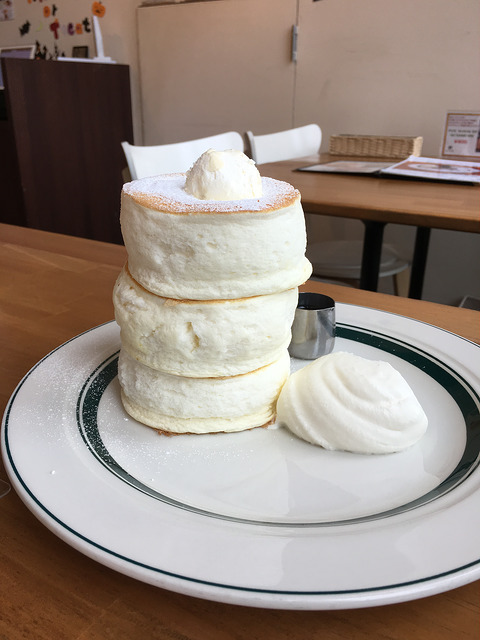

鬆餅下午茶咖啡廳
gram在大阪是相當有名的鬆餅店，光是分店就有六間左右，其中「Premium pancake」因為一日只限定60份（每天11：00、15：00、18：00各20份）更讓人為之傾心。
總共有三片厚片鬆餅、一球奶油（最上面像是冰琪淋的）、一份鮮奶油、一份蜂糖
不管是淋上蜂蜜或是塗上奶油真的都有不同的風味，不管怎麼吃都好吃，但是我個人還是最喜歡吃原味跟塗奶油，那口感給我的震撼力真的是無比利害，目前在台灣還沒有吃過接近它的品質的，真的是會讓你流淚的厚鬆餅，像是海綿蛋糕般的鬆軟口感，但是中間帶點水嫩的感覺真的超無敵的！！！
官網:http://www.cafe-gram.com//
| 電話 | 078‐252‐3515 |
| 地址 | 神戸市中央区雲井通7-1-1 ミント神戸8F |
| 營業時間 | 11:00 – 23:00 |